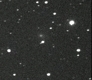

Objevy a značení
Vizuální a fotografické objevy, značení a pojmenování komet
Jak se objevují komety?

Animace pohybu komety
Méně jasná kometa se projeví jako mlhavý objekt, takže je možné ji zaměnit s mlhovinou, galaxií a podobně. Rozlišit kometu od jiného tělesa je možné podle toho, že komety oproti hvězdnému pozadí vykonávají pohyb.
Vizuální objevy
Je na to potřeba dalekohled spíše s malým zvětšením a velkým zorným polem. Také by měl mít dobrou světelnost. Při hledání komet vychází na zkušeného pozorovatele zhruba 1 kometa na 600 hodin hledání. Velké množství objevili astronomové – amatéři.
Fotografické objevy
Často se používají detektory CCD. Ty sice mají menší plochu než fotografické desky, ale jsou mnohem citlivější. Často se kometa objeví vpodstatě omylem při fotografování jiného objektu.
Mnoho komet také objevila sonda SOHO. Jejím hlavním úkolem je pozorování Slunce. Tato sonda objevuje komety patřící do Kreutzovy rodiny komet, které do Slunce narážejí. Počet takto objevených komet byl k 1. červnu 1998 asi 50. Sonda objeví asi 1 kometu za měsíc.
Značení a pojmenování komet
Komety se pojmenovávají podle objevitele, případně po dvou, do roku 1994 až po třech nezávislých objevitelech.
Do konce roku 1994 se komety značily takto:
- Značení předběžné – rok a pořadí objevu (1993a, 1993b, …).
- Definitivní – podle pořadí průchodu přísluním (1993 I, 1993 II, …). Periodické komety měly před jménem označení P/ (např. P/Halley). Když stejný pozorovatel objevil více komet, uvádělo se za jeho jménem číslo, o kolikátou objevenou kometu šlo.
Od roku 1995 bylo zavedeno nové značení podle kódu xxxT/rrrrZy-Q.
- xxx je definitivní číslo tělesa,
- T je typ (P – krátkoperiodická kometa, C – dlouhoperiodická kometa, D – ztracená kometa, X – kometa s neurčitelnou drahou),
- rrrr rok objevu,
- Z půlměsíc objevu (AB – leden, CD – únor, EF – březen, GH – duben, JK – květen, LM – červen, NO – červenec, PQ – srpen, RS – září, TU – říjen, VW – listopad, XY – prosinec). I a Z je vynecháno,
- y pořadové číslo objevu v půlměsíci,
- Q značí sloužku komety (pokud se rozpadla).